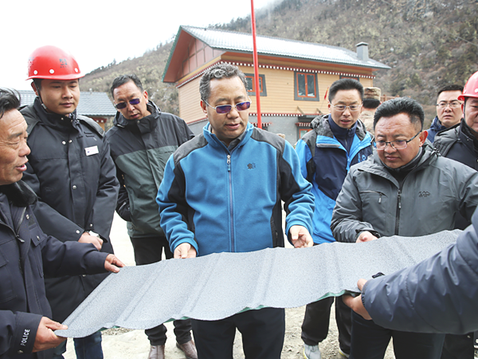

4月1日至4日，市委副书记、市长普布顿珠先后深入隆子县乡村，调研边境小康村建设情况，代表市委、政府，代表许成仓书记向参建单位和工作人员表示感谢和慰问。"
习近平总书记的回信，极大鼓舞了各族干部群众斗志，更加坚定了大家对神圣国土守护和幸福家园建设的信心决心。在党中央的亲切关怀下，在区党委、政府的高度重视下， 在市委政府的扎实推进下，目前，玉麦小康乡村建设基本完成。
到达玉麦已是傍晚时分，普布顿珠来到央宗家，与大家围坐在一起，亲热地聊起来。 大家表示对新建的房子特别的满意，也非常感念党的恩情，一心跟党走。 听了大家的肺腑之言，普布顿珠十分高兴，他说，能住上这么好的房子，过上这么好的生活， 都是得益于以习近平同志为核心的党中央的亲切关怀和自治区党委政府的关心支持， 大家一定要时刻牢记总书记的谆谆重托、永记党的恩情，拥戴信赖忠诚捍卫核心，建好家乡、 守护好祖国疆域一草一木，争当“神圣国土守护者、幸福家园建设者”。
山乡美如画，生活甜如歌。普布顿珠先后来到三林乡边久林村，玉麦乡，扎日乡庄那、桑巴东、曲桑村， 斗玉乡加麦、斗玉村，加玉乡强木金、贡拉村，准巴乡哲村等地，实地调研项目进度、质量等情况， 走访群众听取意见建议。他要求，一定要把人民对美好生活的需要作为奋斗目标，坚持以人民为中心的发展思想 ，把边境小康村建设与乡村振兴战略有机结合起来，把科学绿色、村落风貌、民族特色贯穿到边境小康村建设全过程， 配套完善好水、电、路、讯等基础设施，因地制宜发展农牧业、旅游业等特色产业，真正使边境小康村留得住绿水青山 、记得住乡愁，切实增强边境群众的获得感和幸福感。
 网站首页
网站首页